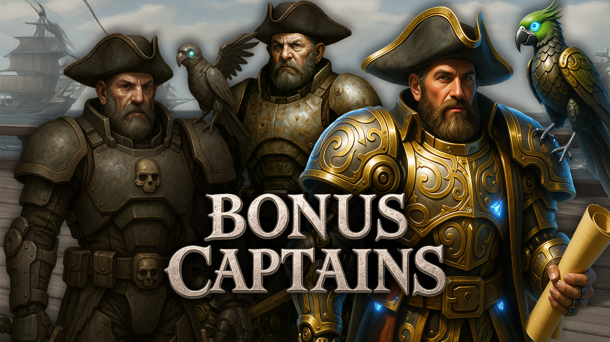
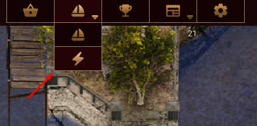

Captain Bonus Map System
The Captain System is a way to help players save time doing Bonus Maps while being online. The Captain starts at level 1 and, as he completes Bonus Maps, he levels up: time per map decreases and the number of Bonus Maps per week increases.

⚙️ How does the Captain System work?
The Captain System is an online system where the player selects the Captain option and uses it to run Bonus Maps automatically.
- Players can use the Captain to complete Bonus Maps from Level 1 to Level 5.
- Players can send the Bonus Maps they want to be made.
- Both Bonus Maps (Ocean & Inferno) will have the same time to be completed.
📍 Where is the Captain System located?
The Captain System can be accessed from the interface section dedicated to Bonus Maps / Captain.

🧭 How do I obtain the Captain?
- The Captain is obtained when a player reaches Level 10 and has VIP activated.
- Once you get the Captain, it levels up from Level 0 → Level 1 with a cost of 0 Diamonds.
📊 Captain Levels – Bonus Maps & Time
| Captain Level | Bonus Maps per Week | Time per Bonus Map (ONLINE) |
|---|---|---|
| Level 1 | 10 | 0h 55min |
| Level 2 | 15 | 0h 50min |
| Level 3 | 20 | 0h 45min |
| Level 4 | 25 | 0h 35min |
| Level 5 | 35 | 0h 30min |
💎 Captain Level Up Requirements & Cost
| From → To | Bonus Maps Required | Diamonds Cost |
|---|---|---|
| Level 1 → Level 2 | 15 | 950,000 |
| Level 2 → Level 3 | 25 | 1,850,000 |
| Level 3 → Level 4 | 45 | 2,550,000 |
| Level 4 → Level 5 | 70 | 3,500,000 |
Total Diamonds required (Level 1 → Level 5): 8,800,000
🧱 Resources used per Bonus Map
The Captain consumes resources for each Bonus Map he completes:
| Bonus Map | EliteBall | Powder |
|---|---|---|
| Ocean Bonus Map | 40,000 | 230 |
| Inferno Bonus Map | 90,000 | 550 |
⛔ Captain Bonus Map Restrictions
- The rewards are the static rewards of the actual Bonus Map. Once finished, players must collect them.
- Elite Points gained are the same values as if you did the Bonus Map manually.
- Players can send the maximum number of Bonus Maps at once according to their Captain level (example: Level 1 can send up to 8 Bonus Maps at the same time, e.g., 5 Inferno + 3 Ocean).
- The resource cost of each Bonus Map will be shown to the player before sending the Captain.
⚖️ Rules
- Captain time will be stopped if a player joins Map 1 or Safe Harbor.
- Once the Captain is sent to do a Bonus Map, the player cannot join Bonus Maps until the ones sent are completed.
- Until the Captain finishes all Bonus Maps that the player sent him to do, it will not be possible to level up the Captain.